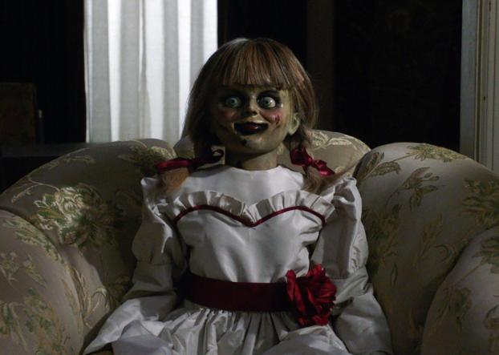
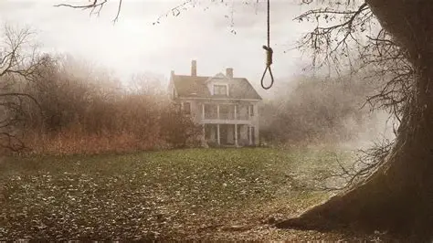
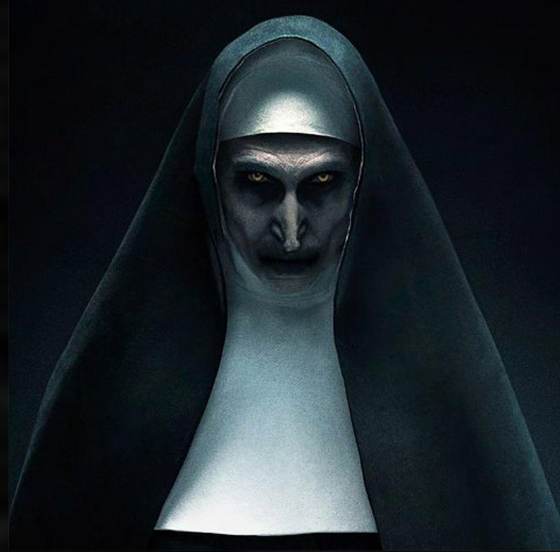

EXPEDIENTE N.01
Annabelle
Una muñeca asociada con sucesos inquietantes y fenómenos sobrenaturales dentro de las películas.
Clasificación: Objeto paranormal ficticio
Los casos más aterradores de los investigadores paranormales
ARCHIVO CLASIFICADO
Consulta algunos de los casos representados en las películas del universo de Expedientes Warren. Cada archivo contiene información sobre sus historias y elementos paranormales.

EXPEDIENTE N.01
Una muñeca asociada con sucesos inquietantes y fenómenos sobrenaturales dentro de las películas.
Clasificación: Objeto paranormal ficticio

EXPEDIENTE N.02
En la película El Conjuro, una familia se muda a una casa donde comienzan a ocurrir acontecimientos inexplicables.
Clasificación: Caso cinematográfico

EXPEDIENTE N.03
Una figura sobrenatural del universo cinematográfico vinculada a una antigua abadía y a sucesos misteriosos.
Clasificación: Entidad ficticia